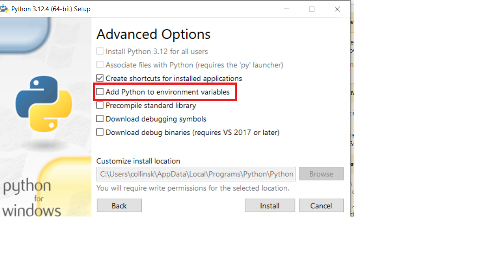
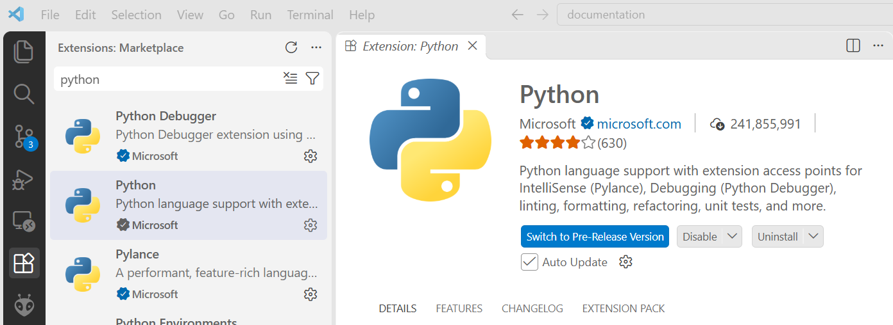
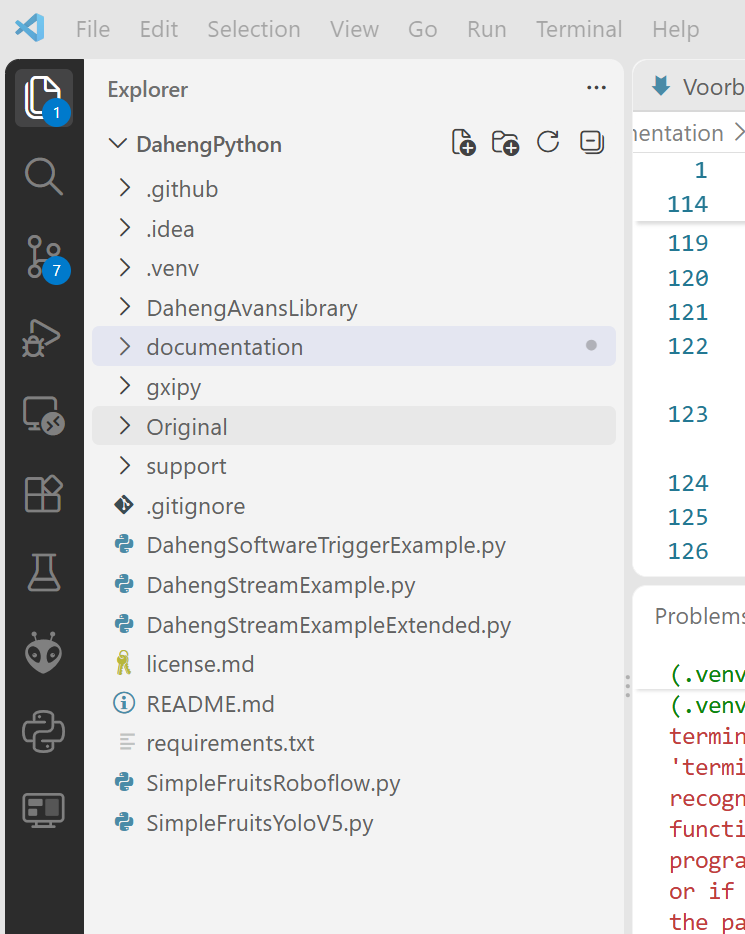
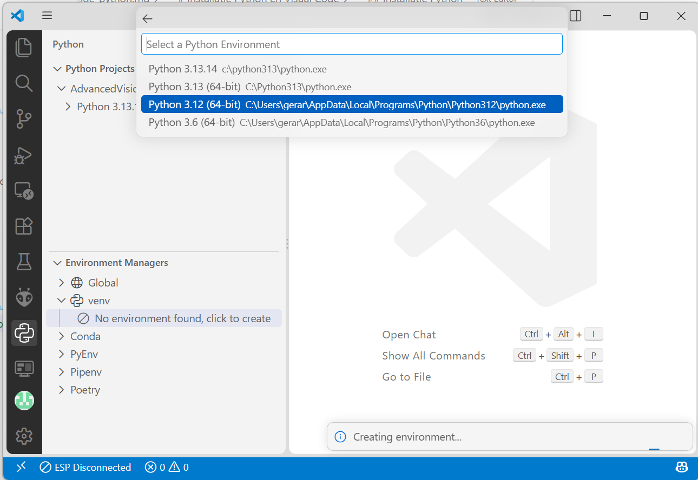

Voorbereidingen(Visual Studio Code)
Installatie Daheng Camera Drivers
Download de laatste versie van de Daheng Camera Drivers vanaf de Daheng-website Installeer de volgende twee pakketten
Galaxy Windows SDK
Galaxy Windows Runtime SDK(???)
Installatie Python
Waarschuwing
Belangrijk De opdrachten in deze workshop werken alleen met versie 3.12 van Python.
Open een windows console of PowerShell en voer het volgende commando uit om Python te installeren:
winget install --id Python.Python.3.12 --source winget --force

Download de versie 3.12 van Python vanaf de Python-website. Voer de installatie uit!
Let op:
Vink “Add Python to PATH” aan (belangrijk!)
Onthoud de installatie-locatie

Installatie Visual Code
Visual Code is een Integrated Development Environment om eenvoudig Python programma’s te ontwikkelen. Download de laatste versie van Visual Code vanaf de Visual Code-website Voer de installatie uit!
Waarschuwing
Belangrijk Visual Code moet correct worden geïnstalleerd om Python-programma’s te kunnen ontwikkelen.
Installatie Visual Code-extensie voor Python
Installeer in Visual Code de Python-extensie om eenvoudig Python-programma’s te kunnen ontwikkelen.
Ga naar de extensies-sectie in Visual Code, zoek naar “Python” en klik op “Installeren”.

Verkrijgen van de Avans Camera Library voor Python
Je kunt de Library op twee manieren verkrijgen:
Download als zip-bestand, er is nog geen versiebeheer met bijvoorbeeld GitHub mogelijk
Fork maken in GitHub, hierna is de Library beschikbaar in je eigen GitHub account en kun je versiebeheer met Git uitvoeren.
Download DahengPython Library Pak het bestand uit in een voor jou bekende map.
Maak een account aan bij GitHub en login op dit account.
Open de DahengPython library repository
Maak een Fork van de repository naar je eigen GitHub account door op het Fork icoon te klikken:

Volg de instructies, maar wijzig de naam van de nieuwe repository niet. Bevestig met Create Fork
Navigeer in een command-console(cmd) naar een voor jou bekende map. Je kunt je repository verkrijgen door het volgende commando:
git clone https://github.com/<jouw_account_naam>/DahengPython
Je kunt vervolgens versiebeheer doen met de volgende command-console(cmd) commando’s
git add .
git commit -m “jouw bericht”
git push
Let op: Het gebruik van Git wordt hier niet nader uitgelegd. Je kunt deze site raadplagen Git Tutorial
Python Environment
Een Python-environment (omgeving) is eigenlijk een afzonderlijke “werkruimte” voor Python waarin je je programma’s draait en afhankelijkheden (libraries) installeert.
Visual Code maakt gebruik van virtuele environments:
Een lokaal, geïsoleerd Python-systeem voor één project.
Je installeert libraries alleen binnen dat environment.
Project openen
Start het Visual Code programma en open met het project van deze workshop. Doe dit door te navigeren naar File --> Open Folder en selecteer de map van de workshopbestanden.
Als je de juiste map hebt geselecteerd zie je alleen de DahengPython map met onderliggende mappen en bestanden, zie afbeelding hieronder.

Maken van virtuele environment
Open de Python-environment selector in Visual Code om de virtuele omgeving te activeren. Kies voor Python 3.12 als je ook andere versies van Python op je systeem hebt geïnstalleerd.

Notitie
Selecteer Python icoontje aan de linkerkant van Visual Code.
Kies
CustomBevestig de locatie
.venv.Skip package installation
Er is nu een map “.venv” in je Project gemaakt
Installeren van benodigde externe libraries
Open de Visual Code(Terminal-->New Terminal) terminal window.

Controleer of de regel waarop je een commando kunt uitvoeren begint met (.venv). Zo niet sluit Visual Code af en start het programma weer opnieuw.
Je kunt nu de externe libraries installeren met het volgende commando
pip install -r .\requirements.txt
Hierna is de programmeeromgeving gereed voor gebruik. 😃Happy coding !!!